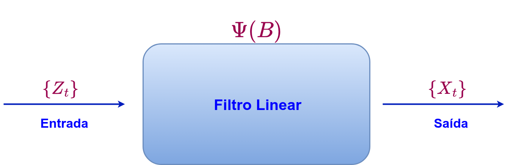

STA13828 - Análise de Séries Temporais I
Processos Lineares
Última atualização: 06 outubro, 2025
Alguns resultados preliminares
Definição 1 (Operador de defasagem) Considere o processo \(\{X_t; t\in\mathbb{Z}\}\). O operador de defasagem, denotado por \(B\) (Backward), define-se como \[BX_t=X_{t-1}.\]
O operador de defasagem pode ser aplicado sucessivamente da seguinte forma:
\[\begin{align} B^2X_{t}&=B\left(BX_{t}\right)=BX_{t-1}=X_{t-2}\\ B^3X_{t}&=B^2\left(BX_{t}\right)=B^2X_{t-1}=X_{t-3}\\ &\,\,\vdots\\ B^kX_{t}&=X_{t-k}, \quad \text{ para } k=0,1,2,\ldots. \end{align}\]
Como convenção, será definido \(B^0X_t=X_t\), i.e., o operador \(B^0\) será considerado como um operador identidade.
Definição 2 (Operador de diferenciação) Considere o processo \(\{X_t; t\in\mathbb{Z}\}\). O operador de diferenciação, denotado por \(\nabla=1-B\), define-se como \[\nabla X_t=X_t - X_{t-1}.\]
Para \(d=0, 1, 2, \ldots\), temos o seguinte resultado \[\nabla^d=(1-B)^d=\sum_{j=0}^d\binom{d}{j}(-1)^jB^j,\] onde \(\dbinom{d}{j}=\dfrac{d!}{j!(d-j)!}=\dfrac{\Gamma(d+1)}{\Gamma(j+1)\Gamma(d-j+1)}\), onde \(\Gamma(t)=\int_{0}^\infty x^{t-1}e^{-x}\,dx\), para \(t>0\) e \(\Gamma(t)=\dfrac{\Gamma(1+t)}{t}\), para \(t<0\).
Em geral, para qualquer \(d\in\mathbb{R}\), com \(d>-1\), temos que \[\nabla^d=(1-B)^d=\sum_{j=0}^\infty \frac{\Gamma(j-d)}{\Gamma(j+1)\Gamma(-d)}B^j.\]
Definição 3 (Operador de diferenciação sazonal) Considere o processo \(\{X_t; t\in\mathbb{Z}\}\). O operador de diferenciação sazonal, denotado por \(\nabla_d=1-B^d\), define-se como \[\nabla_d X_t=X_t - X_{t-d}.\]
Exemplo 1 Seja \(\{X_t;t\in\mathbb{Z}\}\) um processo estocástico. Então, \[\nabla^2X_t=\nabla(\nabla X_t)=(1-B)(1-B)X_t=(1-2B+B^2)X_t=X_t-2X_{t-1}+X_{t-2}.\]
Exemplo 2 Seja \(\{X_t;t\in\mathbb{Z}\}\) um processo estocástico. Então, \[\nabla_6X_t=(1-B^6)X_t=X_t-X_{t-6}.\]
Exemplo 3 Seja \(\{X_t;t\in\mathbb{Z}\}\) um processo estocástico. Então,
\[\begin{align*} \nabla\nabla_{12}X_t&=(1-B)(1-B^{12})X_t=(1-B-B^{12}+B^{13})X_t\\ &=X_t-X_{t-1}-X_{t-12}+X_{t-13}. \end{align*}\]
Exemplo 4 Seja \(\{X_t;t\in\mathbb{Z}\}\) um processo estocástico. Então, \[\nabla_{12}^2X_t=(1-B^{12})^2X_t=(1-2B^{12}+B^{24})X_t=X_t-2X_{t-12}+X_{t-24}.\]
Para detalhes, sugere-se Brockwell e Davis (2016), Hamilton (1994), Morettin e Toloi (2006) e Wei (2005).
Processos lineares
Processo Linear
Definição 4 Um processo \(\{X_t; t\in\mathbb{Z}\}\) é dito linear se a representação do processo é dada por \[X_t=\sum_{j=-\infty}^\infty\psi_jZ_{t-j}, \quad \text{(com prob. 1)}\] onde \(\{Z_t\}\) é um processo de ruído branco com média \(0\) e variância \(\sigma^2\) e \(\{\psi_j\}\) é uma sequência absolutamente somável de escalares, i.e. \[\sum_{j=-\infty}^\infty|\psi_j|<\infty.\]
Algumas considerações
- Podemos reescrever a definição anterior em termos do operador de defasagem, assim \[X_t=\psi(B)Z_t,\] onde \(\psi(B)=\sum_{j=-\infty}^\infty\psi_jB^j\);
- A condição \(\sum_{j=-\infty}^\infty|\psi_j|<\infty\) garante que a soma infinita na representação do processo, i.e., \(X_t=\sum_{j=-\infty}^\infty\psi_jZ_{t-j}\), converge com probabilidade 1, pois, pela desigualdade de Jensen, \(\mathbb{E}|Z_t|\le\left(\mathbb{E}|Z_t|^2\right)^{\frac12}=\sigma\), e \[\mathbb{E}|X_t|\le\sum_{j=-\infty}^\infty\left(|\psi_j|\, \mathbb{E}|Z_{t-j}|\right)\le\left(\sum_{j=-\infty}^\infty|\psi_j|\right)\sigma<\infty.\]
- A condição \(\sum_{j=-\infty}^\infty|\psi_j|<\infty\) também garante que \(\sum_{j=-\infty}^\infty\psi_j^2<\infty\). Dessa forma, o processo converge em média quadrática, i.e., \[\mathbb{E}\left[X_t-\sum_{j=-n}^n\psi_jZ_{t-j}\right]^2\longrightarrow0, \quad \text{ quando } n\to\infty;\]
- O operador \(\psi(B)\) pode ser pensado como um filtro linear, que quando aplicado ao processo de ruído branco, \(\{Z_t\}\) (processo de “entrada”) produz o processo \(\{X_t\}\) (processo de “saída”);
- \(\psi(B)\) também é chamado de Função de transferência do filtro linear.

Proposição 1 Seja \(\{Y_t\}\) um processo estacionário de segunda ordem com média \(0\) e função de autocovariância \(\gamma_Y(\cdot)\). Se \(\sum_{j=-\infty}^\infty|\psi_j|<\infty\), então o processo \(\{X_t\}\), com representação \[X_t=\sum_{j=-\infty}^\infty\psi_jY_{t-j}=\psi(B)Y_t\] é estacionário com média \(0\) e função de autocovariância \[\gamma_X(h)=\sum_{j=-\infty}^\infty\sum_{k=-\infty}^\infty\psi_j\psi_k\gamma_Y(h+k-j).\]
Em particular, se \(\{X_t\}\) for um processo linear, então \(\gamma_X(h)=\sum_{j=-\infty}^\infty\psi_j\psi_{j+h}\sigma^2=\sum_{j=0}^\infty\psi_j\psi_{j+|h|}\sigma^2\).
Prova. Primeiramente, observe que \(\psi(B)Y_t\) converge absolutamente com probabilidade 1:
\[\begin{align} \mathbb{E}\left[\sum_{j=-\infty}^\infty |\psi_j||Y_{t-j}|\right] &=\lim_{n\to\infty}\mathbb{E}\left[\sum_{j=-n}^n |\psi_j||Y_{t-j}|\right]. \end{align}\]
Sendo \(\{Y_t\}\) um processo estacionário de segunda ordem, então \(\mathbb{E}|Y_t|\le\left(\mathbb{E}|Y_t|^2\right)^{\frac12}=c\), onde \(c\) é uma constante que não depende de \(t\). Dessa forma, pelo teorema de convergência monótona, temos que
\[\begin{align} \lim_{n\to\infty}\mathbb{E}\left[\sum_{j=-n}^n |\psi_j||Y_{t-j}|\right]\le\lim_{n\to\infty}\left(\sum_{j=-n}^n|\psi_j|\right)\mathbb{E}|Y_t|<\infty. \end{align}\]
Daí,
\[\begin{align} \mathbb{E}X_{t}&=\lim_{n\to\infty}\mathbb{E}\left[\sum_{j=-n}^n \psi_jY_{t-j}\right]=\sum_{j=-\infty}^\infty \psi_j\mathbb{E}Y_{t-j}=0. \end{align}\]
\[\begin{align} \mathbb{E}\left[X_{t+h}X_t\right]&=\mathbb{E}\left[\left(\sum_{j=-\infty}^\infty \psi_jY_{t+h-j}\right)\left(\sum_{k=-\infty}^\infty \psi_kY_{t-k}\right)\right]\\ &=\sum_{j=-\infty}^\infty\sum_{k=-\infty}^\infty \psi_j\psi_k\mathbb{E}\left[Y_{t+h-j}Y_{t-k}\right]\\ &=\sum_{j=-\infty}^\infty\sum_{k=-\infty}^\infty \psi_j\psi_k\gamma\left(h-j+k\right). \end{align}\]
Pode-se observar que, a convergência absoluta de \(\psi(B)Y_t\) implica que filtros da forma \(\sum_{j=-\infty}^\infty\alpha_jB^j\), com coeficientes absolutamente somáveis, podem ser aplicados sucessivamente a um processo estacionário, para gerar um novo processo estacionário. Por exemplo: podemos considerar um novo processo \(\{W_t\}\) com representação \[W_t=\sum_{j=-\infty}^\infty\psi_jY_{t-j}=\psi(B)Y_t=\alpha(B)\beta(B)Y_t=\beta(B)\alpha(B)Y_t,\] onde \(\alpha(B)=\sum_{j=-\infty}^\infty\alpha_jB^j\) e \(\beta(B)=\sum_{j=-\infty}^\infty\beta_jB^j\).
Exemplo 5 Seja \(\{X_t; t\in\mathbb{Z}\}\) um processo estocástico com representação AR(1), i.e., \(X_t=\phi X_{t-1}+Z_t\) (com prob. 1), onde \(\{Z_t\}\) representa um processo de ruído branco com média \(0\) e variância \(\sigma^2<\infty\), tal que \(Z_t\) é não-correlacionado com \(X_s\), para todo \(s<t\) e \(\phi\) um escalar, tal que \(|\phi|<1\).
Em termos do operador de defasagem, o processo pode ser representado como \[(1-\phi B)X_t=\Phi(B)X_t=Z_t,\] ou, como \(|\phi|<1\), então \(X_t=(1-\phi B)^{-1}Z_t=\sum_{j=0}^\infty\phi^jZ_{t-j}\), ou seja, um processo com representação AR(1) é linear.
Pela proposição anterior, \(\mathbb{E}X_t=0\) e \(\gamma_X(h)=\sum_{j=0}^\infty\phi^j\phi^{j+h}\sigma^2=\dfrac{\sigma^2}{1-\phi^2}\phi^h\), para \(h=0,1,2,3,\ldots\).
Exemplo 6 Considere o processo \(\{X_t; t\in\mathbb{Z}\}\) como no Exemplo 5. Pode-se mostrar que \[X_t=\sum_{j=0}^\infty\phi^jZ_{t-j}\] é a única solução estacionária da equação \((1-\phi B)X_t=Z_t\). Para isso, considere que existe uma outra solução estacionária, tal que
\[\begin{align*} Y_t&=\phi Y_{t-1}+Z_t=\phi (\phi Y_{t-2}+Z_{t-1})+Z_t=Z_t+\phi Z_{t-1}+\phi^2Y_{t-2}\\ &=Z_t+\phi Z_{t-1}+\phi^2(\phi Y_{t-3}+Z_{t-2})=Z_t+\phi Z_{t-1}+\phi^2Z_{t-2}+\phi^3 Y_{t-3}\\ &\ \ \vdots\\ &=Z_t+\phi Z_{t-1}+\cdots+\phi^kZ_{t-k}+\phi^{k+1} Y_{t-k-1} =\sum_{j=0}^k\phi^jZ_{t-j}+\phi^{k+1} Y_{t-k-1}. \end{align*}\]
\[\begin{align} \mathbb{E}\left[Y_t-\sum_{j=0}^k\phi^jZ_{t-j}\right]^2&=\phi^{2k+2}\,\mathbb{E}Y_{t-k-1}^2. \end{align}\]
Dessa forma, quando \(k\to\infty\), então
\[\begin{align} \mathbb{E}\left[Y_t-\sum_{j=0}^k\phi^jZ_{t-j}\right]^2&\longrightarrow0. \end{align}\]
Em outras palavras, \(Y_t\) converge em média quadrática para \(\sum_{j=0}^\infty\phi^jZ_{t-j}\), sendo essa a mesma representação dada para o processo \(\{X_t\}\), o que confirma que \(X_t=\sum_{j=0}^\infty\phi^jZ_{t-j}\) é a única solução da equação \((1-\phi B)X_t=Z_t\).
Para o caso \(|\phi|>1\), \(X_t=\sum_{j=0}^\infty\phi^jZ_{t-j}\) não é convergente. Nesse caso, podemos reescrever a representação do processo, tal que \[X_t=-\phi^{-1}Z_{t+1}+\phi^{-1}X_{t+1}.\] Iterando, podemos observar que
\[\begin{align} X_t&=-\phi^{-1}Z_{t+1}+\phi^{-1}X_{t+1}=-\phi^{-1}Z_{t+1}+\phi^{-1}(-\phi^{-1}Z_{t+2}+\phi^{-1}X_{t+3})\\ &=-\phi^{-1}Z_{t+1}-\phi^{-2}Z_{t+2}+\phi^{-2}X_{t+3}\\ &\ \ \vdots\\ &=-\sum_{j=1}^{k+1}\phi^{-j}Z_{t+j}+\phi^{-k-1} X_{t+k+1}. \end{align}\]
Seguindo os mesmos argumento do caso anterior, \(X_t=-\sum_{j=1}^{\infty}\phi^{-j}Z_{t+j}\) é a única solução estacionária de \((1-\phi B)X_t=Z_t\).
Algumas considerações
- Vale ressaltar que quando \(|\phi| < 1\) a solução estacionária única \(X_t=\sum_{j=0}^\infty\phi^jZ_{t-j}\) pode ser encontrada imediatamente usando \(\psi(B)=\Phi(B)\pi(B)=1\), onde \(\Phi(B)=1-\phi B\) e \(\pi(B)=\sum_{j=0}^\infty\phi^jB^j\);
- Um processo \(\{X_t\}\) com representação AR(1), em termos de \(\{Z_s,s\le t\}\), será chamado de processos AR(1) causal. O termo causal faz menção a que a representação do processo não depende de termos futuros;
- Como observado no Exemplo 6, um processo AR(1) não-causal pode ser reescrito para encontrar sua representação causal;
- A solução \(X_t=-\sum_{j=1}^{\infty}\phi^{-j}Z_{t+j}\) não apresenta uma utilidade prática, no sentido que, a variável \(X_t\) é definida em função de valores futuros. Por motivos práticos, restringimos a atenção em processos AR(1) com \(|\phi|<1\).
Exercícios
Sugestão de exercícios
Encontre as expressões para \(BX_t\) e \(B^2X_t\), quando \(\{X_t\}\) tem as seguintes representações:
\[\begin{align} &a.\, X_t=\beta_0; & b.\,X_t&=\beta_0+\beta_1t; \\ &c.\,X_t=\beta_0+\beta_1Z_t+\beta_2t; & d.\, X_t&=\beta_1Z_t+\beta_2Y_t,\\ \end{align}\]
onde \(\beta_0, \beta_1\) e \(\beta_2\) são constantes e \(\{Z_t\}\) e \(\{Y_t\}\) são processos quaisquer;
Seja \(\left\{X_t\right\}\) um processo estocástico com representação polinomial, i.e., \[X_t=\beta_0+\beta_1t+\beta_2t^2+\cdots+\beta_dt^d+Z_t,\] onde \(\{Z_t\}\) é um processo de ruído branco com média zero e variância \(\sigma^2\). Mostre que \(\{\nabla^dX_t\}\) é um processo estacionário com representação \[\nabla^dX_t=d!\,\beta_d+\nabla^dZ_t.\]
Seja \(\{Y_t\}\) um processo estacionário com média \(0\) e função de autocovariância \(\gamma_Y(\cdot)\). Se \(X_t=a+bt+s_t+Y_t\) (com prob. 1), onde \(s_t\) representa uma componente sazonal de período \(12\). Mostre que \(\{\nabla\nabla_{12}X_t\}\) é um processo estacionário e calcule sua FACV em função de \(\gamma_Y(\cdot)\).
No Exemplo 6, suponha que \(\phi=\pm1\) e mostre que não existe uma solução estacionária para a equação \(X_t-\phi X_{t-1}=Z_t\).
Referências
Política de proteção aos direitos autorais
O conteúdo disponível consiste em material protegido pela legislação brasileira, sendo certo que, por ser o detentor dos direitos sobre o conteúdo disponível na plataforma, o LECON e o NEAEST detém direito exclusivo de usar, fruir e dispor de sua obra, conforme Artigo 5o, inciso XXVII, da Constituição Federal e os Artigos 7o e 28o, da Lei 9.610/98. A divulgação e/ou veiculação do conteúdo em sites diferentes à plataforma e sem a devida autorização do LECON e o NEAEST, pode configurar violação de direito autoral, nos termos da Lei 9.610/98, inclusive podendo caracterizar conduta criminosa, conforme Artigo 184o, §1o a 3o, do Código Penal. É considerada como contrafação a reprodução não autorizada, integral ou parcial, de todo e qualquer conteúdo disponível na plataforma.
Material elaborado pela equipe LECON/NEAEST: Alessandro J. Q. Sarnaglia, Bartolomeu Zamprogno, Fabio A. Fajardo, Luciana G. de Godoi e Nátaly A. Jiménez.